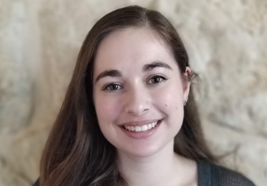

    <!-- Download Section -->
    <section id="download" class="content-section text-center">
        <div class="download-section">
            <div class="container-fluid">
                <h1>Our Leaders</h1>
                <div class="row">
                    <div class="col-sm-4" style="text-align: center;">
                        <h2>Julia Ding, 2023</h2>
                        <h4>President, Cofounder</h3>
                        <hr>
                        <p>Julia is a LASA sophomore interested in computer science and the empowerment of
                            other individuals (specifically minorities) in the field as well.
                            Her participation in hackathons has been an eye-opener to the universality and applications
                            of coding, and she aims to allow others to be able to have the same experience. Aside from
                            computer science, Julia enjoys mathematics as well as playing the cello.
                        </p>
                    </div>
                    <div class="col-sm-4" style="text-align: center;">
                        <h2>Adison Lampert, 2021</h2>
                        <h4>Vice President, Cofounder</h3>
                          <hr>
                          <p>Adison Lampert is a senior at the Liberal Arts and Science Academy. She’s very passionate about increasing the number of women in STEM and has been a part of multiple initiatives to increase those numbers. She’s the founder of def include( ), a summer camp for middle school and high school girls to learn beyond the basics of programming. Additionally, she was selected as one of the ten US Ambassadors for Tech Girls, a US State Department initiative that brings girls from Central Asia and MENA to the US to learn about technology. When she’s not coding or mentoring young girls, Adison likes to watch dating reality shows and read manga. She hopes to pursue a degree in Computer Science and eventually end up in the field of Emotion AI. 
                          </p>
                    </div>
                    <div class="col-sm-4" style="text-align: center;">
                        <h2>Luisa Mao, 2022</h2>
                        
                        <hr>
                        <h3></h3>
                        <p>Luisa is a junior at LASA who loves all things computer science and is most interested in
                           learning more about quantum computing, especially its applications in cryptography.
                           She feels so grateful to have found a community of STEMinists who share many of her
                           passions and interests. Other than computer science, Luisa enjoys playing the piano and swimming.
                           She also has a strong interest in pure math and is part of the math community at LASA.
                        </p>
                    </div>
                </div>
              </div>
        </div>
    </section>
